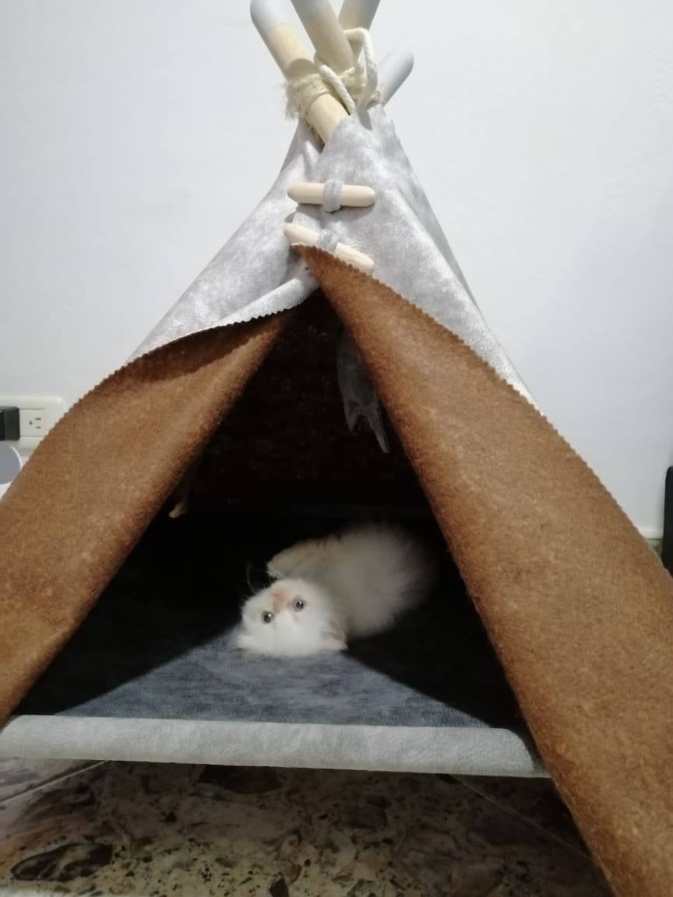
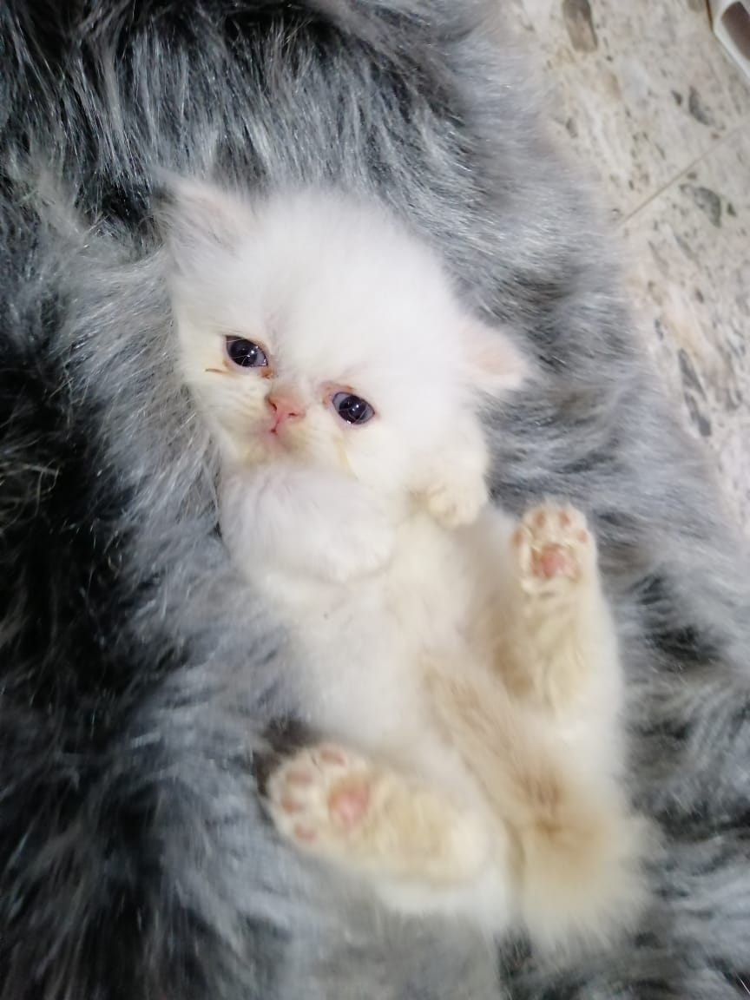
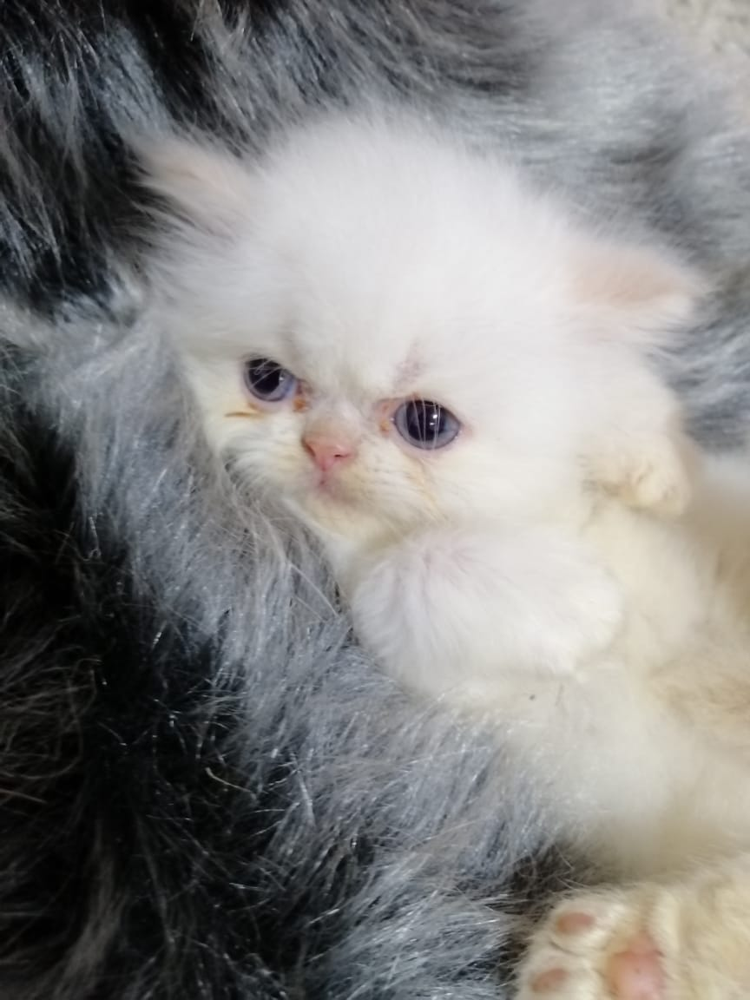
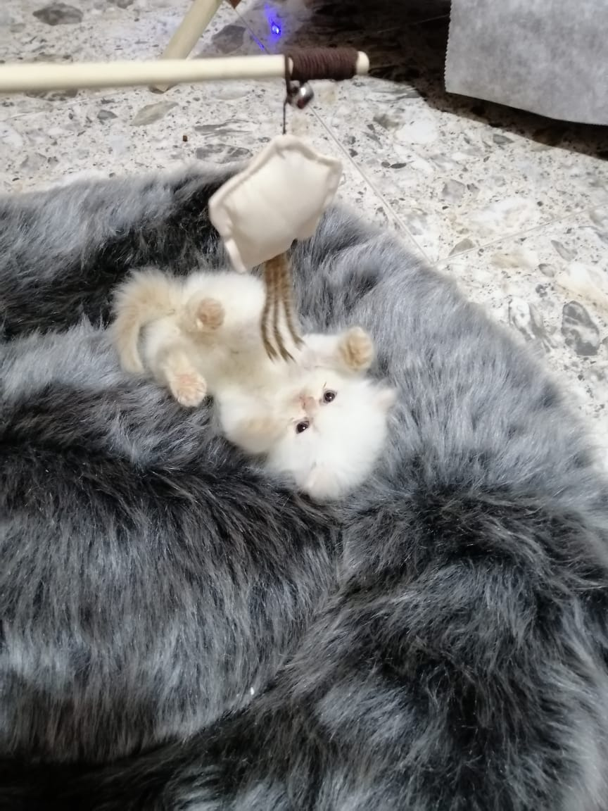
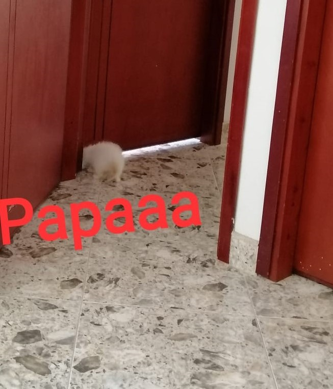
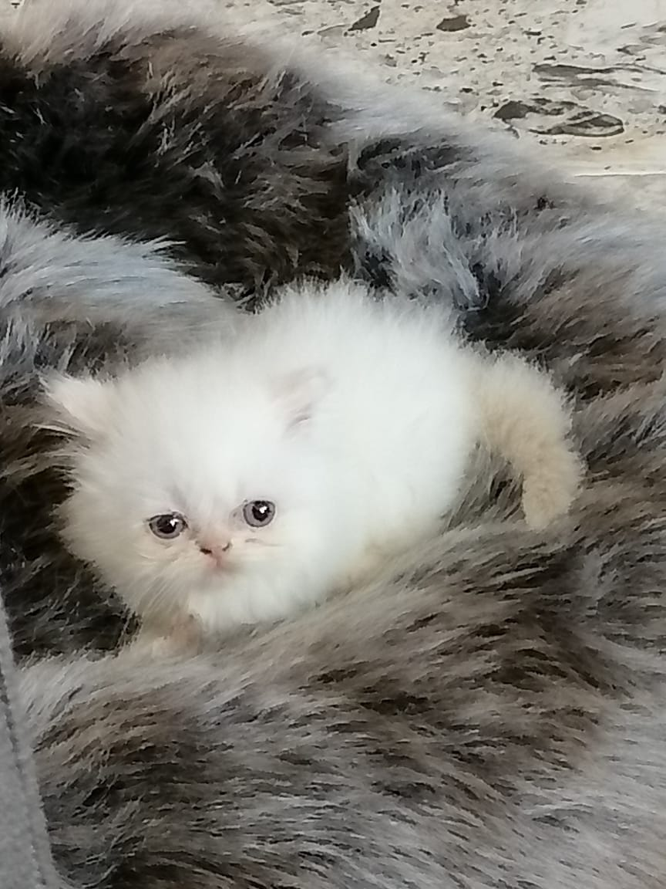

2020-05-26
Nace el año 2020 en el mes de mayo en su día 26. En definitiva, sus padres le llamaron Lior pues en
hebreo lengua natal de sus ancestros significa “La Luz que se me ha dado”. Si conocida frase
traducida al lenguaje de nosotros los humanos significa: ¿Quieres cambiar algo en el mundo? Por
sobre todas las cosas que has de trabajar hazlo en tu mente pues es el único terreno que cabalmente
te pertenece y el mejor aporte a la sociedad. Debido a que con tan solo dos meses pronuncie estas
palabras a sus padres les genera un sentimiento inefable pues la sabiduría de un hijo es la alegría
de su padre
Entre otras hazañas que ha ejecutado con destreza se encuentran: la vuelta a la casa en 3 días,
comer 1 kilo de pollo en una semana, sobrevivir a una enfermedad que generó en su proceso de
desarrollo pese a que los criadores no creían en su recuperación, sus padres lo acogieron y nada fue
óbice para que el saliera airoso de su extenuante lucha. Dada la naturaleza de sus pocos días, su
alcurnia y su agudo sentido de percepción sus padres esperan mucho de él.
Galeria de fotos




